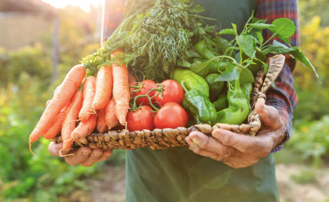

Reduces Heat
Rooftop gardening helps reduce heat in many ways and gives important benefits to both people and the environment. In cities, rooftops usually absorb a large amount of sunlight and heat, making buildings and surrounding areas hotter. By covering rooftops with plants, soil, and greenery, the temperature can be reduced naturally.

Improves Air Quality
Rooftop gardening helps improve air quality by adding more plants and greenery to urban areas. Plants naturally absorb carbon dioxide and harmful pollutants from the air, such as dust, smoke, and toxic gases produced by vehicles and factories. At the same time, they release fresh oxygen through photosynthesis, making the air cleaner and healthier for people to breathe.

Provides Fresh Food
Rooftop gardening helps provide fresh and healthy food for families and communities. People can grow vegetables, fruits, and herbs directly on their rooftops, such as tomatoes, lettuce, chilies, mint, and spinach. Since the food is grown at home, it is fresher, healthier, and free from too many harmful chemicals or preservatives.